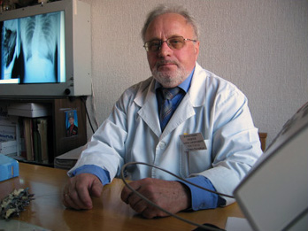

Карпушин Андрей Александрович

- Из врачебной семьи.
- Отец и мать – ортопеды-травматологи. Из 4 детей в семье трое стали врачами. В семье более 20 врачей
- В 1965 году закончил медицинский институт, после чего работал главным врачом Северной участковой больницы Варнавинского района Горьковской области
- В 1967-70гг.- аспирант ГИТО. Защитил кандидатскую диссертацию в 1970 году в ЦИТО, г. Москва
- В 1981 г. Начал работу по лечению сколиозов под руководством проф. Л.Л.Роднянского ( г.Красноярск) и проф. Я.Л.Цивьяна (г.Новосибирск)
- Автор 52 научных работ
- Женат, имеет 4 детей